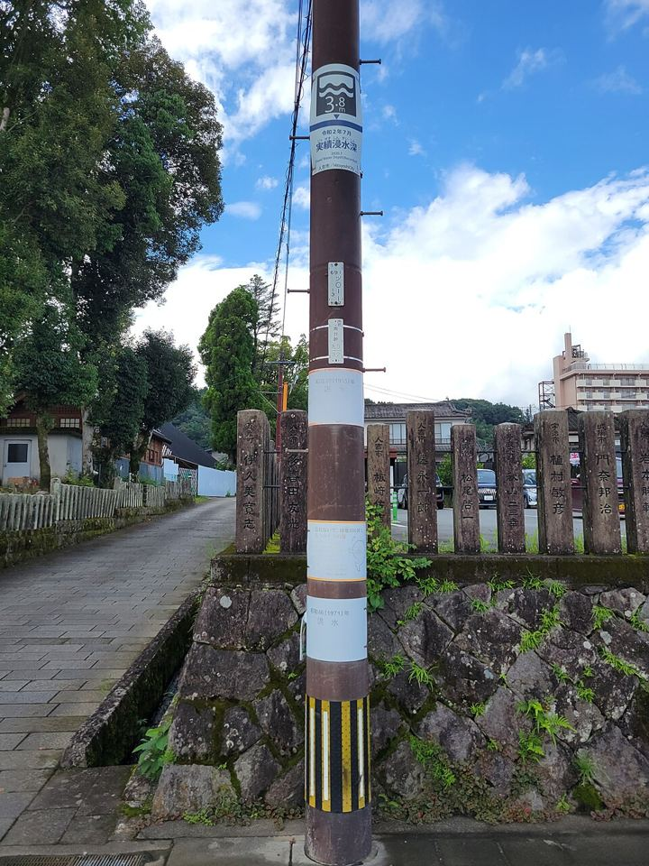

地図とハザード情報を端末に保存します
Wi‑Fi接続時がおすすめです
iPhoneでは「ホーム画面に追加」して使うと保存データが消えにくくなります

人吉市・青井阿蘇神社前の電柱
いちばん上の標識が2020年7月豪雨で実際に水が来た高さ 3.8m
写真 ja:User:Sanjo／Wikimedia Commons CC BY-SA 4.0
熊本県の各地で想定されている浸水の深さを地図で調べられます
1000年に1回程度の大雨などを想定した深さです
色がない場所も安全とは限りません
避難の判断は市町村の発表に従ってください